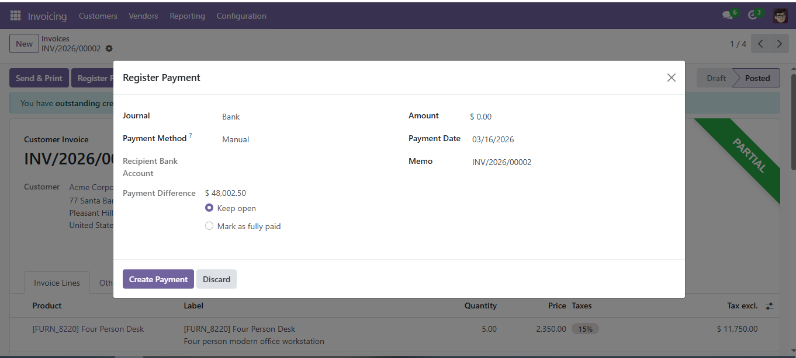
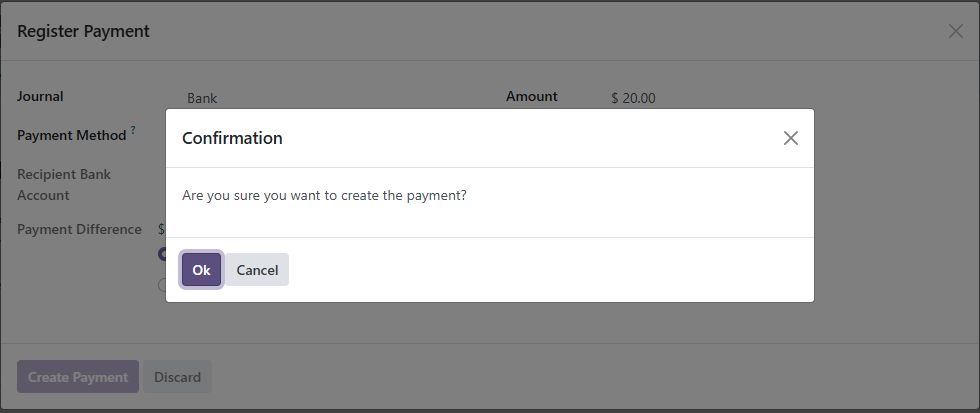
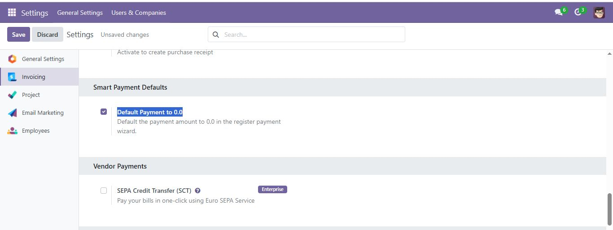

Odoo's "Default-to-Full" payment automation is fast, but it can be dangerous. One wrong click can reconcile a partial payment as a full one, creating accounting headaches and audit trails that are hard to fix.
By defaulting the payment amount to 0.00, we ensure the user is paying attention. Instead of simply clicking "OK", the accountant must enter the physical value observed on the payment document.

Never guess again. A standard confirmation dialog is added to the "Create Payment" action, serving as a final "sanity check" before the database is updated.

Configure the 0.0 default behavior globally within your standard Accounting settings. No complex setup required.
